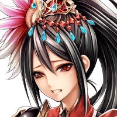

パリス
ウウッ……。 大丈夫、Shou-chan？


セリア
でも、ルジーナが……。
セリア
見て。 器用に逆さまで岩に挟まってるでしょ？
ルジーナ
クソッ！ 何で急に岩が落ちて来やがったんだ！
ルジーナ
Shou-chan！ お前がグズグズしてっからだぞ！
ルジーナ
オーンにはお前が言い訳しておけよ！ 俺は知らねーからな！
セリア
ルジーナ、アンタもう少しひねったこと 言えないの？
ルジーナ
それより、アイツをとっとと倒さねーと 本気で俺たちもヤバイぞ……。
セリア
どうしてここに？ まさか、アンタが今のを……。
モーラ
私があなたたちを倒すなら もっと別の方法を取ります。
モーラ
信用してもらう必要などありません。 私は言いたいことを言うだけですから。
モーラ
私は先ほどあなたたちが戦って 逃げられたこの地を支配する魔神、
モーラ
人と神が戦った愚かな大戦の少し前に この地に墜とされた者なのです。
モーラ
元神徒なのに魔神としてこの地で生きる。 私が嫌うには十分な理由だと思いませんか？
パリス
元神徒……。 でもあの姿、とてもそうは見えないけれど。
モーラ
メロードはこの地に墜とされた際、 かなりの傷を負っていました。
モーラ
そのため、セルグラードにいたシュスイと まともに戦うことができず
モーラ
当時、この地はウルジの力を恐れ 誰も支配しようとしていませんでしたが、
モーラ
何も知らない彼は、愚かにも この地を支配していったのです。
モーラ
しかし、彼は徐々にウルジの力に 侵されていきました。
ルジーナ
だが、何でお前たちはヤツを 今まで放っておいた？
ルジーナ
堕ちてきた後すぐに倒しちまっても よかったんじゃないのか？
モーラ
当時、彼には彼なりに役立つことも あったのです。
モーラ
だけどもうその役目も必要ない。 だから消えてもらいたい。
ルジーナ
……その役目とかを話すつもりは どうせねーんだろうな。
モーラ
フフッ、猿は猿なりに少しは 賢くなったようですね。
モーラ
でも、どちらにしろあなたたちは 彼を倒す必要があるのでしょう？
セリア
まあ、それはそうだけど どこかに逃げられちゃったのよね。
モーラ
おそらくメロードは、この先の “アヴォル雷光橋”を渡った向こうにある
モーラ
彼が元の姿の頃に住んでいた館に いるでしょう。
モーラ
あなたたちの邪魔をしないだけ ありがたいと思ってほしいですね。
ルジーナ
おい、Shou-chan！ とっととこんな所、離れるぞ。
ルジーナ
いつまでもいたらお前らも、メロードとやら みたく崩れちまうだろうからな。
ルジーナ
まあ、お前らは少し崩れた方がまともな顔に なるかもしれねーがな。
パリス
きっともうウルジの影響を 受け始めてるのよ……。
不気味な男
まがりなりにもオーンどもが選んだ 召喚師だけはあるということか。